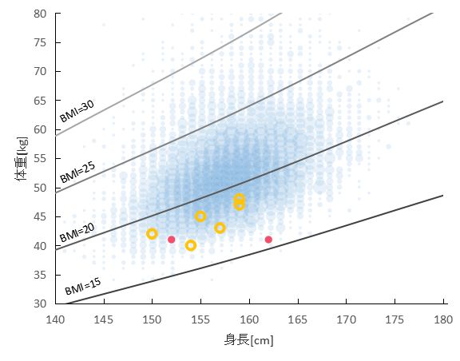
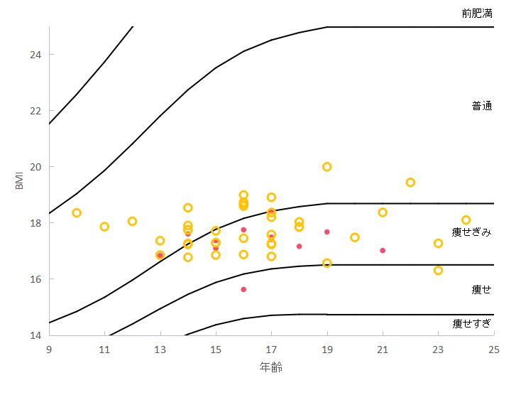

ミリオンライブアイドルの体型
たんかるP
tankarup@gmail.com
目次
背景

16歳女性の身長・体重分布(赤丸：765AS、橙丸：ミリオンスターズ、青丸：2011政府統計
)

年齢別BMI分布(赤丸：765AS、橙丸：ミリオンスターズ、黒線：WHOデータ
)
参考文献
紅木弘、
アイドルのBMIをみてみたら，ヤバいということに気づいた
、アイマス統計、2019 (2021-08参照)
Natsco、
【アイドル研究/BMI編】二次元アイドルはちゃんと食べていますか。
、I am Natsco、2017 (2021-08参照)
ルシフェルP、
【体調管理】 体重が落ちたのでBMIを確認してみたら・・・
、ルシフェルPのプロデューサーノート、2016 (2021-08参照)
かわせ、
アイドルマスターシリーズのキャラクター230人のスタイルの良し悪しを分析する
、すのふら、2016 (2021-08参照)
ひたらぎ、
シャニマスは女性のためのコンテンツだった・・・？
、東京工業大学アイドルマスター研究会、2020 (2021-08参照)
NobNOVA、
【アイドルマスター】各アイドルのBMI考察
、Chat Street in NicoNico、2011 (2021-08参照)
身長と体重の相関表（‰）
、学校保健統計調査 平成１７年度 全国表
BMI-for-age GIRLS
、WHO、2007
別府ら、
若年成人女子の人体計測データからみた体格・体型特性
、人間工学、Vol.33, No.2, 1997
千葉、
近年における成長期女子の体型特性について
、福島大学教育学部論集第68号、2000
本資料ではアイドルマスターミリオンライブシアターデイズの画像を用いています。それらの画像の著作権はBNEI社にあります。